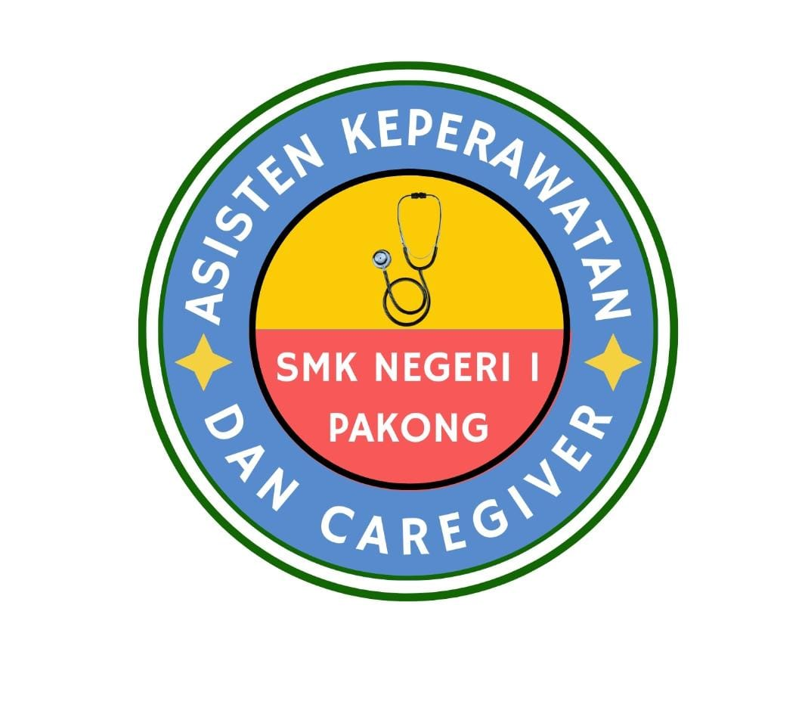

Wadah pembelajaran dan praktik peserta didik untuk tumbuh menjadi tenaga kesehatan yang terampil, peduli, dan berintegritas.
📚 MULAI BELAJAR
TENTANG LPKCLPKC SMKN 1 Pakong merupakan pusat pembelajaran dan praktik peserta didik yang dirancang untuk mendukung pengembangan pengetahuan, keterampilan, dan sikap profesional di bidang kesehatan.
Melalui pembelajaran digital dan kegiatan praktik, peserta didik diarahkan untuk menjadi tenaga kesehatan yang terampil, peduli, disiplin, dan berintegritas.
Materi dan sumber belajar digital.
Pengembangan keterampilan peserta didik.
Mempersiapkan peserta didik secara profesional.
Dokumentasi evaluasi hasil pembelajaran peserta didik pada materi Pengenalan Alat Kesehatan melalui Learning & Practice Center.
Grafik ini akan ditampilkan setelah grafik ketuntasan belajar dipublikasikan dari Google Sheets.
Data grafik disajikan secara agregat untuk dokumentasi evaluasi pembelajaran. Hasil evaluasi digunakan sebagai bahan refleksi dan perbaikan proses pembelajaran.